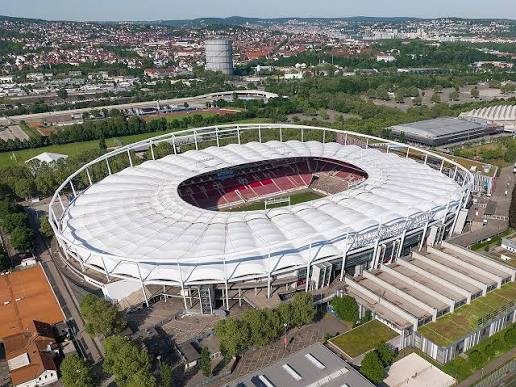
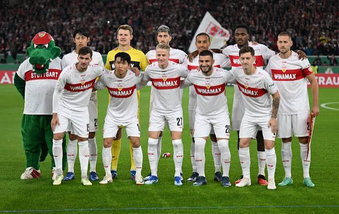

Founded
1912
Germany
Discover the history, stadium, legendary players, major trophies, records, and interesting facts about VfB Stuttgart.
Introduction
VfB Stuttgart is a professional soccer club based in Stuttgart, Germany. The club was formed in 1912 through the merger of two local sports clubs whose histories reached back into the 1890s. Stuttgart has become one of the best-known clubs in German soccer and has won several national championships and domestic cups.
Stuttgart plays its home matches at the MHPArena. The stadium has been renovated and renamed several times during its long history and has hosted major club matches as well as international competitions. It is known for the strong atmosphere created by Stuttgart supporters.
The club is easily recognized by its white uniform with a red horizontal chest band. This design has become an important part of Stuttgart's identity and is also represented in the club's badge.
Many important German players have represented Stuttgart, including Jürgen Klinsmann, Karl Allgöwer, Guido Buchwald, Sami Khedira, Mario Gómez, Timo Hildebrand, and Joshua Kimmich during his youth development. Stuttgart has a strong reputation for developing talented young players.

About the Club
VfB Stuttgart was officially created in 1912 when Stuttgarter FV and Kronen-Club Cannstatt merged. The roots of those organizations went back to the late 19th century, giving Stuttgart a long sporting history before the modern club was officially formed.
Stuttgart developed into a strong German soccer team during the first half of the 20th century. The club experienced major success during the 1950s, winning German championships in 1950 and 1952. Stuttgart also won domestic cup competitions during this successful period.
When the Bundesliga was established in 1963, Stuttgart became one of the league's original clubs. The team remained an important part of German soccer while developing players and competing against the country's strongest clubs.
Stuttgart enjoyed another major period of success during the 1980s. The club won the Bundesliga in 1983-84 and later reached the UEFA Cup final in 1989. Although Stuttgart lost the final to Napoli, the run demonstrated the club's ability to compete at the European level.
Another memorable championship came during the 1991-92 Bundesliga season. Stuttgart entered the final day involved in a close championship race and secured the league title after a dramatic victory against Bayer Leverkusen.
During the 1990s, Stuttgart became known for an exciting attacking trio of Giovane Élber, Fredi Bobic, and Krassimir Balakov. The group was nicknamed the "Magic Triangle" and helped Stuttgart win the DFB-Pokal in 1997.
Stuttgart won another Bundesliga championship during the 2006-07 season. The team included several young players and finished ahead of Schalke 04 in the title race. Mario Gómez, Sami Khedira, and goalkeeper Timo Hildebrand were among the important members of that championship team.
The club later experienced difficult periods that included relegation from the Bundesliga. Stuttgart responded by earning promotion back to the top division and rebuilding its team. These changes demonstrated the club's ability to recover from challenging seasons.
Stuttgart returned to the top of German soccer during the 2023-24 season by finishing second in the Bundesliga. The club then added another major trophy in 2025 by winning the DFB-Pokal, continuing its long tradition of success in German soccer.

Club Details
1912
Stuttgart, Germany
MHPArena
White and Red
Club Record
Karl Allgöwer is one of VfB Stuttgart's greatest goalscorers and scored 167 Bundesliga goals for the club. He represented Stuttgart from 1980 to 1991 and became known for his powerful shooting and ability to score from long distance.
Allgöwer was an important member of the Stuttgart team that won the Bundesliga championship during the 1983-84 season. His long career with the club made him one of Stuttgart's most recognizable players.
Success
Legendary Players
VfB Stuttgart has had many talented and internationally successful players, but no player has won the men's Ballon d'Or while representing Stuttgart.
Several players who represented Stuttgart became major names in international soccer. Jürgen Klinsmann, Sami Khedira, Mario Gómez, and Guido Buchwald are examples of players who achieved success for both club and country.
Did You Know?